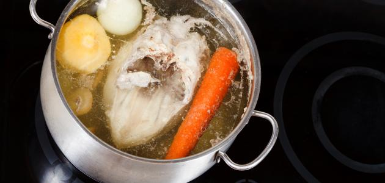
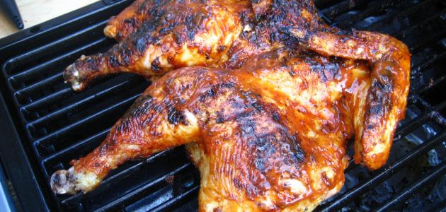
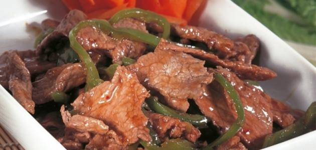

Cooking For Men - الطبخ للجدعان

سلق الدجاج
- خطوات سلق الدجاج
- ننظف الدّجاج دائماً في مقدمة الطبخ، حيث نقطع الدّجاج كما نقطعه بالطريقة التي نفضلها.
- نزيل الشحوم عن الدّجاج لأنها تحتوي على دهون عالية ونضع قطع الدّجاج في وعاء ونضيف إليه الماء الساخن، ونبدأ بغسله جيداً فنلاحظ لون الماء تغير للأحمر بسبب الدم الموجود فيه، ثم نبدل الماء ونعيد الطريقة مرة أ خرى لكن نضيف ملعقتي ملح ونغسل الدّجاج مرة أخرى ونكرر هذه العملية عدة مرات حتى نحصل على ماء نظيف.
- نفرك قطع الدّجاج بقطعة نصف ليمونة، فنلاحظ أن قطع الدّجاج أصبحت نظيفة وجاهزة للسلق.
- نضيف الماء بكمية تغمر قطع الدّجاج ونضعها على النار حتى يغلي الماء، ونلاحظ عند غليان الماء تكوّن طبقة من الزفر، وإذا كانت هذه الطبقة كثيرة، ننصح بتبديل الماء وإضافته مرة أخرى بعد غسل الدّجاج وعند هذه الخطوة نكتفي بضمان نظافة الدّجاج ونضجه بالطريقة الصحيحة، حيث نضعه على النار مرة أخرى وننتظر حتى الغليان ، ويمكن إضافة ورق الغار حتى يضفي نكهة رائعة للدّجاج، وأحياناً تتم إضافة البصل والثوم عند سلق الدّجاج.
- ملاحظات
- تترواح مدة سلق الدّجاج حتى ينضج ويكون جاهزاً للطبخ أو القلي مدة خمس وأربعين دقيقة حتى ينضج تماماً، ولذلك يمكن تغطية الوعاء عند سلق الدّجاج حتى ينضج أسرع بهذه الخطوة.
- يمكن استعمال المياه التي سلقنا فيها الدّجاج كمرق للطبخ، حيث تتم إضافة البهارات والقرفة والهيل واللومي لمرق الدّجاج، لنستخدمه للكبسة والمقلوبة وأية أطباق تحتاج للمرق.
- يكون الدّجاج المسلوق جاهزاً للطبخ إما بالقلي أو الشوي وبهذه الطريقة ضمنّا أن الدّجاج سليم ويمكن تناوله.
فيديو طريقة سلق الدجاج

شوي الدجاج
- المكونات
- دجاجةٌ كاملةٌ متوسطة الحجم.
- خمسةُ سنون من الثَوم المفروم.
- نصفُ كوبٍ من زيت الزيتون أو الزيت النباتي.
- عصيرُ ليمونة كبيرة.
- ملعقة ونصف من رُب البندورة.
- ثلاثُ ملاعق كبيرةٍ من الكاتشب.
- ثلاثُ ملاعق كبيرة من الخل.
- بصلة متوسطة الحجم مقطعة ناعماً.
- حبة بندورة متوسطة الحجم مقطعة ناعماً.
- ملعقةٌ صغيرة من البهارات.
- ملعقةٌ صغيرة ونصف من الملح.
- ملعقةٌ صغيرة من الفلفل الأحمر الحار. نصف ملعقة صغيرة فلفل أحمر حلو (البابريكا).
- نصفُ ملعقة صغيرة من السُكر. نصف ملعقة صغيرة من الزَعتر الناشف. ربعُ كوبٍ من الماء.
- طريقة التحضير
- نَغسل الدَجاج جيداً بالماءِ والخلِ والملح.
- نصفِي الدّجاج وننشفه جيداً باستخدام مناديل المطبخ.
- نقطع الدجاج إلى ثمانيةِ قطع (يمكنك إزالة الجلد إذا أردتي أن تخففي من السُعرات الحراريَة).
- في وعاء كبير نضعُ جميعَ المكونات المذكورة سابقاً ونخلطها جيداً.
- نضع قطع الدَجاج في الخليط ونتأكد بأن الصلصة غلفت الدجاج جيداً وأن الدجاج قد تشرب النكهات.
- نغطي الوعاء وندخله إلى الثلاجة لمدة ساعتين على الأقل أو نتركه في الثلاجة طوال الليل وهو الأفضل.
- نحمِي الفرن على درجة حرارة 200 درجة مئوية ثم نغطي صينية الخبز بالقصدير لتسهيل عملية التنظيف لاحقاً.
- نخرج الدّجاج من الصلصة ونحتفظ فيها لكي نستخدمها وقت الشوي.
- نضع قطع الدجاج على الصِيني ة ونغطيها بالقصدير.
- نترك الدجاج لمدةِ خمسة وأربعين دقيقة في الفرن.
- نزيلُ ورق القصديرعن الصينيَة ثم نتركها في الفرن من نصف ساعة إلى خمسة وأربعين دقيقة أخرى أو إلى أن تتحمر مع تقليب الدجاج وتشريبه بالصلصة عند الحاجة.
- عندما تنضج قطع الدّجاج وتتحمر نقدمها مع صلصة الثوم والبطاطا المقلية.
فيديو طريقة عمل الدجاج المشوي

اللحمة المسلوقة بالتوابل
- المكونات
- كيلو من اللحم المخلى من العظم، والمنظف جيداً من الدهون.
- ست حبات من البصل الأبيض مقشّرة، ومنزوعة الجوف، ويتم حشوها بالقليل من القرنفل.
- ثمانية أكواب من الماء الساخن.
- ملعقتان صغيرتان من الملح، ويمكن زيادتها بحسب الرغبة.
- ملعقتان صغيرتان من الفلفل الأسود.
- أربع جزرات متوسطة الحجم، المقشرة والمقطعة إلى قطع رفيعة ومتساوية.
- ملعقة صغيرة من الزعتر البري المجفف.
- ملعقة صغيرة من الكمون.
- ملعقتان من البابريكا المدخنة الحلوة.
- ملعقتان صغيرتان من بهار اللحمة الخاص.
- ورقتان من الغار.
- نصف ملعقة من الكركم.
- رشة من جوزة الطيب.
- ثلاث حبات من الهيل.
- ملعقتان صغيرتان من البقدونس الطازج المفروم بشكل ناعم.
- ملعقتان صغيرتان من الشبت المقطع.
- ملعقتان صغيرتان من الكراث المقطع بشكل خشن.
- طريقة التحضير
- توضع قطع اللحم المقطعة في قدر، وتضاف إليها كمية الماء المغلي.
- يترك اللحمة حتى تغلي على النار، ويجب الحرص على إزالة الرغوة عن وجه القدر.
- يترك اللحم على النار حتى يتسبك لمدة ربع ساعة بدون أي إضافات.
- تضاف كمية البصل المحشي بالقرنفل، والكراث، والشبت، والجزر، وبقية البهارات إلى قدر اللحم.
- تترك اللحمة على النار لمدة إضافية تبلغ ثلث ساعة، وذلك حتى تنضج اللحمة.
- بعد التأكد من نضوج اللحم، تقدم وهي ساخنة، وتزين بالقليل من البقدونس.
فيديو طريقة عمل اللحمة المسلوقة بالتوابل